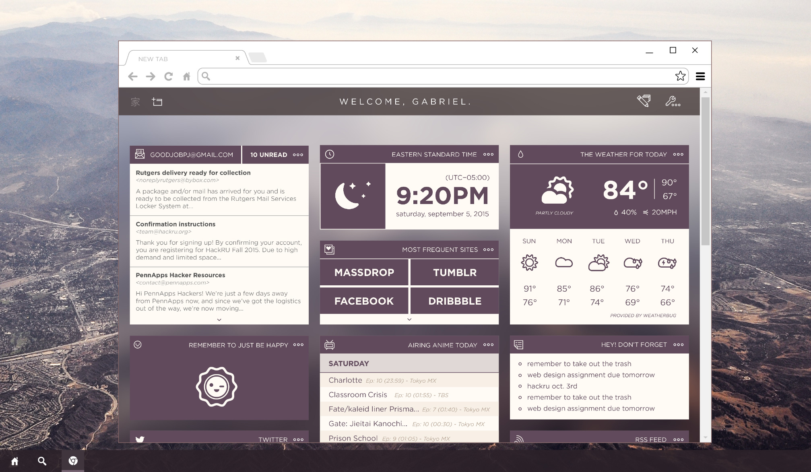

Ie is modular, grid based homepage consisting of widgets that are highly customizable. Created with a team of two other developers at the 36-hour hackathon, PennApps Fall 2015.
By the end of the hackathon, my team and I had delivered a prototype with a few functional widgets and working customization functions. The prototype allowed for color customizability of widget UI and custom backgrounds. The widgets themselves also had the ability to be placed anywhere within a grid based system that organized the placement of the widgets. Widgets could follow a 2x2, 2x1 or 1x1 size within the grid system, these units being user specified as well.
Initially, the purpose of this project was to create an OS and browser agnostic way to allow users to have a high level of customization for their homepage. Although, the applications for the project extend past this initial purpose. We began to realize that this could be brought to other levels of user needs. For example, on an enterprise level, companies can make their own homepage with company branding, create widgets to fit the needs of their employees and deliver a company branded homepage to all browsers, regardless of operating system.
Currently, Ie is being polished and developed for an initial release into the Chrome Web Store as a Chrome extension.
Github Repo